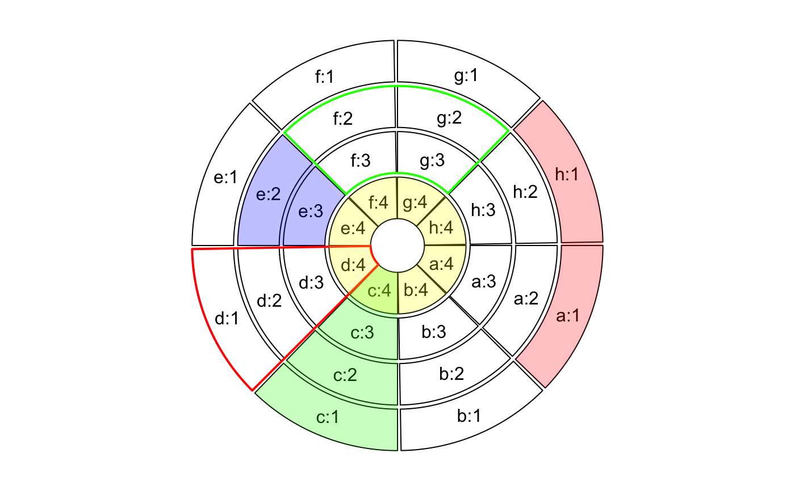

highlight.sector.RdHighlight sectors and tracks
highlight.sector(sector.index, track.index = get.all.track.index(), col = "#FF000040", border = NA, lwd = par("lwd"), lty = par("lty"), padding = c(0, 0, 0, 0), text = NULL, text.col = par("col"), text.vjust = 0.5, ...)
| sector.index | A vector of sector index |
|---|---|
| track.index | A vector of track index that you want to highlight |
| col | Color for highlighting. Note the color should be semi-transparent. |
| border | Border of the highlighted region |
| lwd | Width of borders |
| lty | Style of borders |
| padding | Padding for the highlighted region. It should contain four values representing ratios of the width or height of the highlighted region |
| text | text added in the highlight region, only support plotting one string at a time |
| text.vjust | adjustment on 'vertical' (radical) direction. Besides to set it as numeric values, the value can also be a string contain absoute unit, e.g. "2.1mm", "-1 inche", but only "mm", "cm", "inches"/"inche" are allowed. |
| text.col | color for the text |
| ... | pass to |
You can use circos.info to find out index for all sectors and all tracks.
The function calls draw.sector.
highlight.sector("c", col = "#00FF0040")highlight.sector("d", col = NA, border = "red", lwd = 2)highlight.sector(factors, col = "#FFFF0040", track.index = 4)